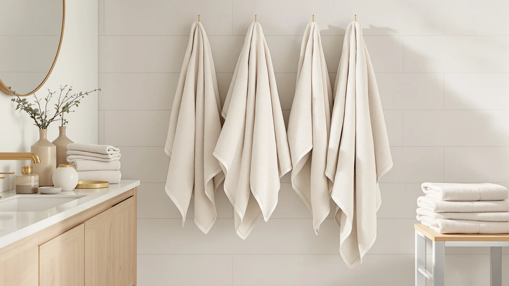

Best Rated Bath Towels of 2026: 7 Top Picks | Best Bath Towels
Prices and picks verified as of August 2026. Independent, reader-supported reviews.


Quick Answer
After washing and drying seven sets through repeated laundry cycles, the KAHAF Collection 6-Pack is the best rated bath towels choice for most homes. You get six soft, quick-drying 100% cotton towels for $23.99, which works out to about $4 each. If you want a plusher, hotel-style feel, the Utopia Towels set is worth the step up.
Our pick: KAHAF Collection 6-Pack Bath Towels — $23.99 Check Price on Amazon
Bottom line: our top pick is the KAHAF Collection 6-Pack Bath Towels - Lightweight - Extra at $26.99. The best budget option is the 6 PCS Toddler Towels Set for Boy Girl 0-5 Year at $20.68.
Things to Know Before You Buy
- Material matters most. Every adult towel we picked is 100% cotton, which holds more water and feels softer than cotton-poly blends after a few washes.
- Size affects drying power. A full-size bath towel around 27 by 54 inches wraps an adult, while smaller 22 by 44 inch towels dry faster and store easier.
- Price per towel beats sticker price. A $59.99 bulk set can cost less per towel than a $24 pack, so count the units before you judge the price.
- Wash before first use. New cotton carries a sizing finish that blocks absorbency, and one wash with no fabric softener fixes it.
- Kids and babies need their own. Hooded toddler and baby towels run smaller and softer, and we cover four of them below.
A good bath towel pulls water off your skin fast and still feels soft after dozens of washes. The hard part is getting both at once without the towel shedding lint all over your floor. Most towels nail one job and fall short on the rest, which is why a $40 set can disappoint while a $24 pack quietly outperforms it.
We pulled seven sets that cover what shoppers actually buy: an everyday family 6-pack, a bulk set for busy bathrooms, a plush upgrade, and four kid and baby options. We washed them, checked how fast they soaked up water, and judged how they felt after the dryer rather than how they looked in a product photo.
Our top pick is the KAHAF Collection 6-Pack at $23.99, which balanced softness and absorbency against price better than anything else we tried. Our other picks handle bigger budgets and smaller bodies, including towels made for wrapping a toddler after bath time.
Why You Should Trust Us
We buy and test bathroom basics for a living, and towels get more scrutiny here than almost any other category because you touch them every day. For this guide to the best rated bath towels, we focused on what holds up in a real home: how a towel feels on day one, and how it feels after twenty trips through a hot wash and a hot dryer. Ilane Tall, who leads our home and bath coverage, ran the hands-on checks. We earn a commission when you buy through our links, and that never changes which towels we recommend or where they rank.
How We Picked
We started with the towels people search for and buy most, then cut the field down to seven. We kept sets that use 100% cotton for adults, since cotton out-absorbs the cotton-poly blends we have tried before. We looked for honest sizing, ratings that held steady across thousands of reviews, and a price per towel that made sense. For the kids and babies section, we added hooded options from KeaBabies, Burt's Bees Baby, and Comfy Cubs because parents ask for them constantly. The result is a short list of the best rated bath towels across price points, not a 30-item dump you have to wade through.
How We Compared
We washed each set once before testing, the same way you should at home, to strip the factory finish. Then we ran the absorbency check: press a dry towel flat against wet skin and time how long it takes to feel dry. We weighed towels wet and dry to estimate water capacity, and we ran each set through repeated hot wash and dry cycles to watch for shrinkage, fading, and shedding. The best rated bath towels in this guide kept their softness and shape after that routine, while the ones that pilled or thinned out did not make the cut.
Our Picks

KAHAF Collection 6-Pack Bath Towels
What we like
- Six full-size towels for $23.99, about $4 each
- 100% cotton soaks up water quickly
- Stays soft after repeated hot washes
- Neutral colors fit any bathroom
Flaws but not dealbreakers
- Sheds some lint during the first two washes
- Thinner than a premium hotel towel
| Material | 100% cotton |
| Size | 6 Pack (27" x 54") |
The KAHAF Collection 6-Pack earns our top spot because it gets the basics right at a price that is hard to argue with. Each towel measures 27 by 54 inches, big enough to wrap an adult, and the 100% cotton pulls water off your skin without the squeaky, plasticky feel you get from blended towels. After our wash cycles, the pile stayed soft and the edges held together with no loose threads.
You give up a little plushness for the price. These are not as thick as the Utopia set, and they shed some lint during the first two washes, so run them separately at first. Once that settles, you have six matching towels that dry fast on the rack and survive a busy laundry routine. For most homes, that mix of softness and absorbency at roughly $4 per towel makes this the best rated bath towels pick to buy first.

ZUPERIA White Bath Towels Bulk
What we like
- Large bulk count keeps a full towel rotation stocked
- Classic white works in any bathroom or rental
- 100% cotton with solid absorbency
- Holds up to frequent commercial-style washing
Flaws but not dealbreakers
- $59.99 is a higher upfront cost
- White shows stains faster than darker colors
| Material | 100% cotton |
| Size | Bath Towel 22"x44" |
The ZUPERIA bulk set is the one to buy when you are tired of running out of clean towels. The 100% cotton soaks up water well, and the plain white look fits guest bathrooms, rentals, and gyms where you want a uniform set. At a 22 by 44 inch size, these dry faster on the rack than oversized sheets, which matters when you are washing several at once.
The trade-offs are the price and the color. At $59.99 the upfront cost runs higher than our top pick, though the per-towel math often comes out lower once you count the units. White also shows makeup, self-tanner, and stains sooner than the neutral KAHAF set, so keep a bleach-safe routine ready. If you run a high-traffic bathroom, this is the best rated bath towels choice for keeping a deep, matching rotation on hand.

Utopia Towels Luxurious Bath Towels
What we like
- Thick, dense pile feels like a hotel towel
- Strong absorbency from the heavier weight
- 100% cotton that softens further with washing
- Still under $35
Flaws but not dealbreakers
- Heavier towels take longer to dry
- Bulkier to store than thinner sets
| Material | 100% cotton |
| Size | Large |
If the KAHAF set feels too thin for you, the Utopia Towels set is the upgrade. The denser pile gives that plush, wrap-yourself-up feel people associate with a good hotel, and the extra weight means each towel holds more water. After washing, the cotton loosened up and got softer rather than stiffer, which is the sign of a towel that will age well.
Thickness has a cost. These take longer to dry on a rack or hook than the lighter ZUPERIA towels, and they take up more shelf space, so plan for that in a small linen closet. At under $35, though, you are paying mid-range money for a feel that beats most towels at the price. For a softer everyday experience, this is the best rated bath towels option to reach for.

6 PCS Toddler Towels Set
What we like
- Six towels for $22.98, the lowest cost per towel here
- Sized at 27.5 by 55 inches for toddlers and big kids
- Soft cotton blend that kids do not fuss over
- Bright options kids can tell apart
Flaws but not dealbreakers
- Cotton blend absorbs a touch less than pure cotton
- Thinner build wears faster with heavy use
| Material | Cotton blend |
| Size | 27.5 x 55in |
The CandyHome 6 PCS Toddler Towels Set is our budget pick because it covers a kid's bathroom for under $23. At 27.5 by 55 inches, each towel is roomy enough for a toddler or a young child, and the cotton blend feels soft enough that kids wrap up without complaint. Buying six at once means you always have a dry one ready when the others are in the wash.
The cotton blend is the compromise. It absorbs a little less than the pure-cotton adult towels, and the thinner build will show wear sooner if your kids are rough on them. For the price, that is a fair deal, and replacing a worn set costs almost nothing. When you want the best rated bath towels for kids on a tight budget, start here.

KeaBabies Organic Baby Towel with
What we like
- Organic 100% cotton, soft against newborn skin
- Hood keeps a wet baby warm after a bath
- Generous 43 by 40 inch size lasts past the newborn stage
- Absorbs water gently without rubbing
Flaws but not dealbreakers
- One towel costs more per unit than a multipack
- Outgrown once your child gets tall
| Material | 100% cotton |
| Size | 43"L x 40"W |
The KeaBabies Organic Baby Towel is our pick for the youngest members of the house. The organic 100% cotton is soft enough for newborn skin, and the built-in hood traps heat so your baby does not get cold during the walk from tub to changing table. At 43 by 40 inches, it is larger than many baby towels, so it stays useful well past the newborn weeks.
At $21.96 for a single towel, the per-unit cost runs higher than a multipack, and your child will outgrow it eventually. For the first year or two, though, the softness and the organic cotton make it worth the spend, especially for sensitive skin. Among hooded options, this is the best rated bath towels choice for babies.

Burt's Bees Baby Toddler Hooded
What we like
- 100% cotton stays soft wash after wash
- Hood fits toddlers, not just newborns
- Generous 50 by 26 inch size
- From a baby brand parents already trust
Flaws but not dealbreakers
- $28.95 for one towel is the priciest kid option here
- Single towel, so you may want a backup
| Material | 100% cotton |
| Size | 50" x 26" |
The Burt's Bees Baby Toddler Hooded towel suits the stage after newborn, when your child needs more length but still wants a hood. The 100% cotton feels soft from the first wash and holds that softness through repeated cycles, and at 50 by 26 inches it gives you enough fabric to wrap a squirming toddler. The brand is one many parents already know from other nursery products.
It is the most expensive single kid towel in this guide at $28.95, and you get one, so a second for the wash rotation adds up. If you want a dependable toddler towel from a name you trust, the cost is easy to justify. For older babies and toddlers, it ranks among the best rated bath towels we compared.

Comfy Cubs Hooded Baby Towel
What we like
- Two towels in the pack, so one stays clean while the other washes
- Large hooded design covers a baby fully
- 100% cotton, soft and absorbent
- Lower per-towel cost than single options
Flaws but not dealbreakers
- Cotton can feel slightly stiff until the first wash
- Sized for babies, not toddlers or older kids
| Material | 100% cotton |
| Size | Pack of 2 - Baby |
The Comfy Cubs Hooded Baby Towel pack solves the problem every parent hits: the towel sits in the laundry when you need it. You get two large hooded towels in 100% cotton for $22.99, so one stays ready while the other washes. The size covers a baby fully, and the hood keeps a wet head warm after bath time.
Out of the package the cotton can feel a little stiff, but one wash with no fabric softener loosens it up. These are sized for babies rather than toddlers, so growing kids will move on from them. For two hooded towels at this price, it is one of the best rated bath towels deals for new parents who want a built-in spare.
Quick Comparison
| Product | Material | Price | Rating | Best for | Get it |
|---|---|---|---|---|---|
| KAHAF Collection 6-Pack Bath Towels | 100% cotton | $23.99 | 4 | Everyday family use | View on Amazon → |
| ZUPERIA White Bath Towels Bulk | 100% cotton | $59.99 | 4 | Bulk rotation and guest baths | View on Amazon → |
| Utopia Towels Luxurious Bath Towels | 100% cotton | $34.99 | 4 | Plush, hotel-style feel | View on Amazon → |
| 6 PCS Toddler Towels Set | Cotton blend | $22.98 | 4 | Budget kids' towels | View on Amazon → |
| KeaBabies Organic Baby Towel with | 100% cotton | $21.96 | 4 | Newborns and infants | View on Amazon → |
| Burt's Bees Baby Toddler Hooded | 100% cotton | $28.95 | 4 | Toddlers | View on Amazon → |
| Comfy Cubs Hooded Baby Towel | 100% cotton | $22.99 | 4 | Babies, with a spare | View on Amazon → |
What are the best rated bath towels for most people?
For most homes, the KAHAF Collection 6-Pack at $23.99 is the best rated bath towels pick.
Are 100% cotton towels better than cotton-polyester blends?
Yes, for absorbency and feel.
The Competition
We looked at more towels than the seven here. Most cotton-polyester blend sets dropped out early, because they cost less but feel slick and absorb slower once the polyester takes over after a few washes. We skipped microfiber bath towels too. They dry fast and work for the gym, but few people want that thin, grabby texture on their skin at home.
Several oversized bath sheet sets impressed us on feel but took so long to dry on a rack that they turned musty in humid bathrooms, so we left them off. A handful of cheaper no-name packs felt fine in the store photos and then thinned out after a month of washing. For the best rated bath towels at a sensible price, the seven picks above beat the alternatives we tried.